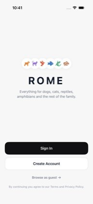
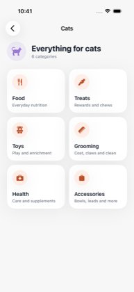
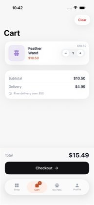
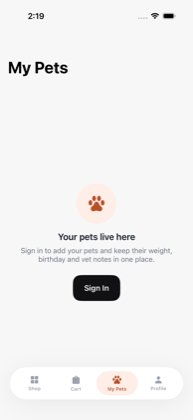
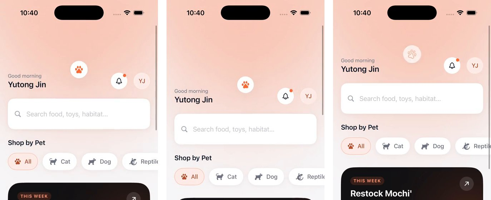
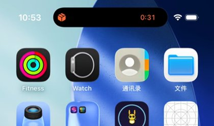
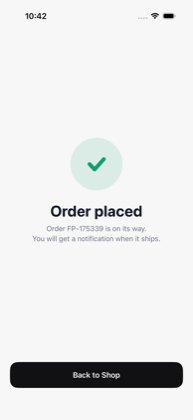

The tab bar ate taps
On product and checkout screens, the floating tab bar sat over the Add to Cart bar and swallowed the tap. Each tab now keeps its own navigation, and the bar only shows at a tab's root.
Case study
A pet supplies shop for iOS. Dogs, cats, reptiles, amphibians, birds, fish and small pets, each with only the categories that actually apply to them.

Welcome Shop
Shop
Categories Product
Product
Cart My Pets
My Pets
Guest gateDesign decisions
The brand colour is a warm orange. White text on it measured 2.84:1, below the 4.5:1 that accessibility guidelines ask for, so it can't fill a button with a label on it.
The rule that came out of it: black fills every primary action, and orange is kept for selected chips, prices, stars and badges, where it carries no small text. Where orange has to hold text, it uses a darker step that passes.
| Text on | Contrast | Result |
|---|---|---|
| Brand orange | 2.84 : 1 | Fails |
| Darker orange | 4.98 : 1 | Passes |
| Ink black | about 18 : 1 | Passes easily |
Pulling to refresh shows a paw that grips the top of the list, holds it open while the shop reloads, then lets go. The built-in control can't do that: it snaps back on its own curve the moment loading ends, so there's no held-open moment for a paw to grip.
So the pull is hand-built from ordinary layout. The paw opens its toes first and the list springs back about 110 ms later. Without that small gap it reads as a shove rather than a release.

Anyone can browse without an account. An account is only needed to save something: pets, or an order.
In code, "guest" is its own state rather than "signed out", which separates two questions: may this person see the app, and do they have an account? A guest who opens My Pets gets a friendly gate instead of an empty list, and signing in from there keeps them on the same screen.
iOS 26's Liquid Glass goes on the layer that floats above content: the tab bar, the bottom action bars and the toast. It stays off product and pet cards, because glass on content means glass on glass.
An ambient background takes its colour from the pet you're browsing. That exposed a bug: product placeholders used the same tint, so products melted into the page. They now sit on an opaque base and read as objects against anything.
The order then carries on outside the app, as a Live Activity on the Dynamic Island.

Found by testing
UI tests walk the real app through two journeys, end to end, and take the screenshots on this page. They found four bugs that reading the code didn't.
On product and checkout screens, the floating tab bar sat over the Add to Cart bar and swallowed the tap. Each tab now keeps its own navigation, and the bar only shows at a tab's root.
A field hidden by setting its opacity to zero also vanished for VoiceOver and for the tests.
Under a non-US region setting, prices showed as US$10.50.
Every card showed the product name in the placeholder and again underneath. The placeholder already is the name, so the second line went.
Scope
This is a portfolio build. Checkout, validation and the confirmation are complete; only the payment gateway is a stub. Sign-in accepts any details, and data lives in memory. Each of these sits behind one interface, so a real service can be plugged in without touching the screens.
